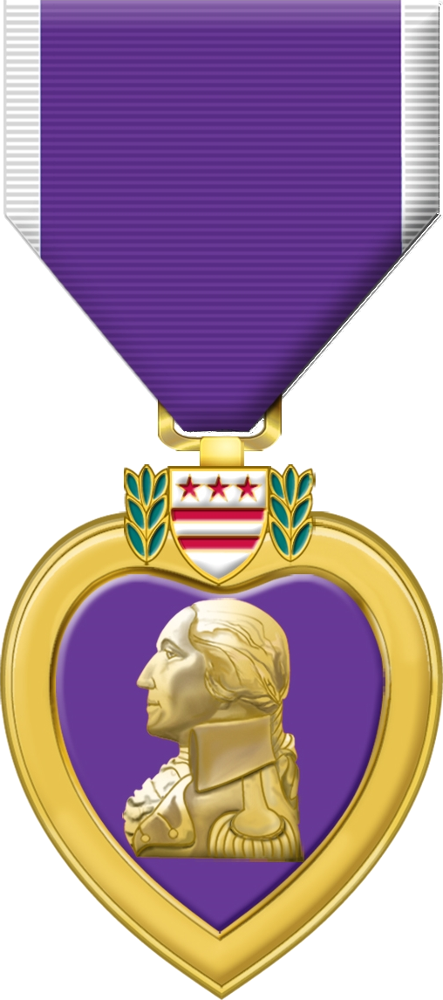

Hawk Platoon: Khe Sanh March 1967

"Hawk" - 3rd Platoon 1967
During the end of March 1967 Alpha Company was sent to Khe Sanh to relieve members of the 3rd Force Recon Company that had been previously tasked with the reconnaissance mission in the Khe Sanh area. Shortly after arriving members of the 3rd platoon signed a South Vietnamese Flag. As a result of many years of historical research it is believed that every member in this group of men were either killed in action or wounded by August 1967. This flag was returned to the United States and is at the present time in the care of Fred Baker. This flag is very proudly displayed at our reunions and in the future it will be donated to an appropriate facility for perpetual care and display.
Signatures On The Flag Killed In Action
| Cpl. | Acosta | William | G. | |
| Pfc. | Allen | Merlin | R. | 30 June 67 |
| LCpl. | Baker | Fred | J. | |
| Pfc. | Bazydlo | Thomas | J. | |
| LCpl. | Bruce | Guy | R. | |
| LCpl. | Bruder | Robert | ||
| LCpl. | Bruder | Ronald | J. | |
| LCpl. | Burden | Terrie | L. | |
| Cpl. | Castaneda | Eugene | 12 August 67 | |
| LCpl. | D'Lugas | Jerry | ||
| Cpl. | DiDonna | Antonio | R. | |
| Pfc. | Guy | Mariano | A. | |
| LCpl. | Hullihen | Neal | V. | |
| LCpl. | Killen, III | John | D. | 30 June 67 |
| Cpl. | Knapstad | Arthur | ||
| LCpl. | Morici | Peter | ||
| Cpl | Moshier | Jim | E. | 11 June 1967 |
| LCpl. | Muns | Karel | J. | |
| LCpl. | Nahan, III | John | B. | 03 August 67 |
| LCpl. | Perry | Dennis | M. | 02 July 67 |
| Pfc. | Raymond | Ray | P. | |
| Cpl. | Rudolf | Thomas | R. | |
| LCpl. | Runnels | Glyn | L. | 30 June 67 |
| Pfc. | Savelkoul | Jeff | ||
| Cpl. | Walker | Robin | L. | |
| Pfc. | Welch | Robert | J. | |
| Pfc. | Wells, Jr. | Melvin | C. |